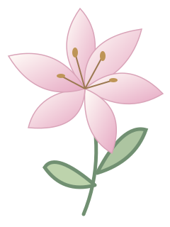

ALBUM MEKAR / MOMEN & PENCAPAIAN
Setiap langkah,
satu bunga baru.
Ruang untuk menyimpan dokumentasi dan sertifikat perjalananku.

Menyiapkan album…
Menunggu musim mekar.
Dokumentasi akan tampil di sini setelah foto prestasi ditambahkan.